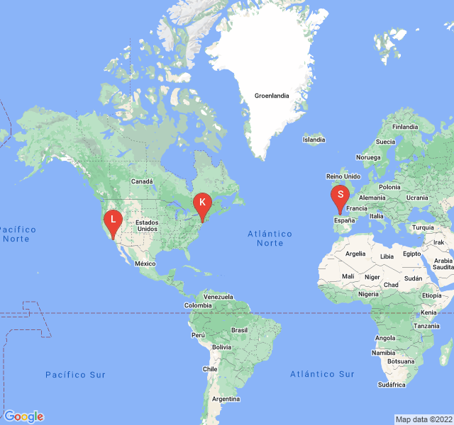

Mi localizacion actual
Mi localizacion con respecto a otros equipos de la NBA
Se ha realizado correctamente la petición de localización
Datos de mi ubicacion actual
Longitud: -5.701632grados
Latitud: 43.5388416 grados
Precision de la longitud y latitud: 1207.3986214967993 metros
Altitud: null metros
Precision de la altitud: null metros
Rumbo: null grados
Velocidad: null m/s
